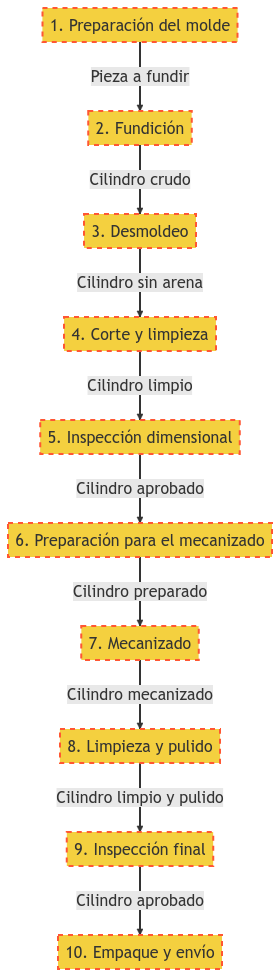
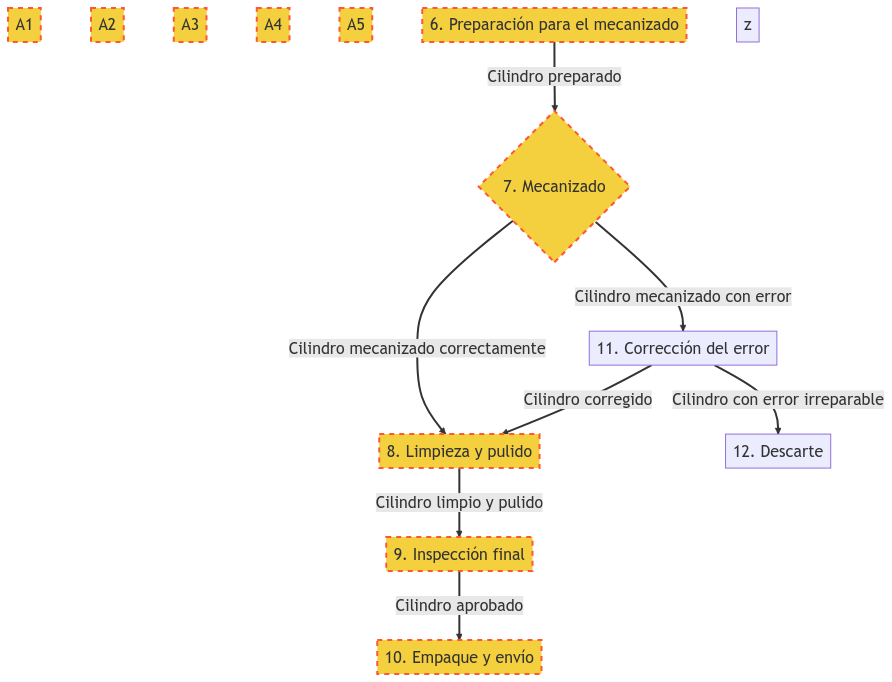
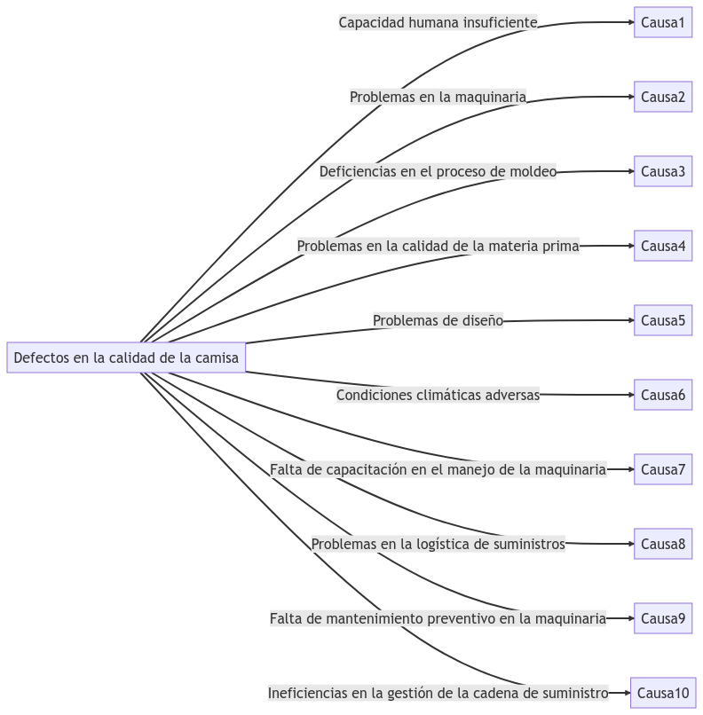

La importancia de las herramientas de análisis en la empresa: un caso de estudio en la fabricación de camisas
Conocer diseñar e implementar Instrumentos e indicadores de Gestión y Sistemas implica manejar herramientas de análisis.
Como dueño de una empresa, sabes lo importante que es mantener tus procesos en orden y bajo control. La fabricación de camisas, por ejemplo, es un proceso complejo que requiere de una gran cantidad de etapas y una coordinación precisa para que todo salga bien. En este artículo, te explicaremos por qué es importante utilizar herramientas de análisis en la empresa y cómo puedes aplicarlas en la fabricación de camisas para mejorar tus ganancias y optimizar tus procesos.
¿Qué son las herramientas de análisis?.
Para empezar, debemos entender qué son las herramientas de análisis. En términos simples, se trata de herramientas que nos permiten medir, evaluar y entender los procesos y resultados de nuestra empresa. Estas herramientas son esenciales para tomar decisiones informadas y mejorar la eficiencia de nuestra empresa. En el caso de la fabricación de camisas, podemos utilizar herramientas de análisis para entender cada paso del proceso y detectar posibles errores antes de que se conviertan en un problema mayor.
"Las herramientas de análisis nos permiten medir, evaluar y entender los procesos y resultados de nuestra empresa."
Elon Musk Fundador de Tesla Motors
Un ejemplo de herramienta de análisis es el diagrama de flujo de procesos. Este tipo de diagrama nos permite visualizar cada etapa del proceso de fabricación de camisas y entender cómo se relacionan entre sí. En el diagrama a continuación, podemos ver claramente las etapas del proceso de fabricación de camisas, desde la preparación del molde hasta el empaque y envío del producto final. Este tipo de herramienta es especialmente útil para los empleados administrativos, operadores de maquinaria y gerentes, ya que les permite entender el proceso completo y detectar posibles errores.
Diagrama de flujo de Fabricación de Camisas
Optimizar para ganar más y proteger la empresa.
Pero los diagramas de flujo de procesos no solo nos permiten entender los procesos, también nos permiten modificarlos para mejorarlos. Si detectamos un problema en alguna etapa del proceso, podemos modificar el diagrama de flujo para optimizarlo. Por ejemplo, si detectamos que el proceso de corte y limpieza está tardando demasiado, podemos analizar cada etapa del proceso y encontrar maneras de hacerlo más eficiente. De esta manera, podemos mejorar nuestros procesos y aumentar nuestras ganancias.
Diagrama de flujo de Fabricación de Camisas optimizado
"Solo el verdadero control de los procesos aumentará las ganancias y protegerá las empresas."
William Edwards Deming (1900-1993) Padre de la Calidad
Diagramas de Causa efecto.
Otro ejemplo de herramienta de análisis que podemos utilizar en la fabricación de camisas es el análisis de causa efecto. Esta herramienta nos permite identificar las causas subyacentes de un problema y tomar medidas para evitar que vuelva a ocurrir. En el caso de la fabricación de camisas, podemos utilizar esta herramienta para detectar posibles errores en el proceso y tomar medidas para corregirlos antes de que se conviertan en un problema mayor.
Diagrama de Causa efecto Fabricación de Camisas
Este diagrama de causa-efecto representa 10 posibles causas que pueden afectar la calidad de las camisas producidas en el proceso de fabricación de camisas para automotores. Cada una de las causas identificadas puede tener un impacto directo en la calidad de la camisa, lo que a su vez puede afectar la satisfacción del cliente y los resultados financieros de la empresa. Los diagramas de flujo, causa efecto entre otras herramientas de análisis son el resultado de dinámicas administrativas y de gestión gerencial modernas que hay que aprender, sin el conocimiento de estás técnicas es posible que los diagramas elaborados no contengan información fiable. Es importante tener en cuenta estas causas y trabajar para minimizar su impacto en el proceso de fabricación.
Relación entre procesos y márketing.
Pero, ¿cómo se relaciona todo esto con el departamento de marketing? En realidad, la relación es bastante estrecha. El departamento de marketing es responsable de entender las necesidades de los clientes y diseñar estrategias para satisfacerlas. Si utilizamos herramientas de análisis en la fabricación de camisas, podemos mejorar nuestros procesos y aumentar nuestra eficiencia, lo que nos permitirá ofrecer productos de mayor calidad a precios más competitivos. Las herramientas administrativas de análisis de procesos enlazados no las abordaremos en este artículo, pero existen herramientas que permiten demostrar a nuestros clientes que nos aseguramos de la calidad de nuestros productos, esto, a su vez, nos permitirá atraer más clientes y aumentar nuestras ganancias.
Asesoría para el éxito empresarial
Transformamos tu empresa en una máquina de éxito con Dreamuniversity.
En Dreamuniversity, estamos comprometidos en ofrecer a nuestros estudiantes todas las herramientas necesarias para el análisis y optimización de procesos en la empresa. Es por eso que en nuestro curso de "Diseño e Implementación de Instrumentos e Indicadores de Gestión y Sistemas", enseñamos las técnicas y metodologías necesarias para analizar y enlazar los procesos administrativos, gerenciales y de producción de manera eficiente.
Además, en Dreamuniversity, sabemos cómo automatizar los procesos empresariales para hacer que la gerencia general y la dirección de una gran empresa sea más sencilla y efectiva. Con estas herramientas, las empresas pueden identificar problemas subyacentes y tomar medidas para corregirlos, optimizando procesos administrativos, de marketing y otros aspectos críticos del negocio.
Al aplicar estas técnicas, las empresas pueden aumentar la calidad de sus productos y reducir sus costos de producción, lo que les permite ofrecer precios más competitivos y atraer a más clientes. Como resultado, nuestras técnicas les permiten aumentar sus ganancias y expandirse a nuevos mercados.
Nuestro compromiso en Dreamuniversity no es solo enseñar las herramientas necesarias, sino también ayudar a nuestros estudiantes a aplicarlas de manera efectiva en sus propias empresas. Con nuestra metodología de enseñanza, nuestros estudiantes obtienen las habilidades necesarias para destacar en un mercado cada vez más competitivo.
No pierdas la oportunidad de aprender las mejores técnicas de análisis de procesos y optimización empresarial. ¡Inscríbete en nuestro curso y comienza a impulsar el éxito de tu empresa hoy mismo!
.
4 Respuestas a "LA IMPORTANCIA DE LAS HERRAMIENTAS DE ANÁLISIS EN LA EMPRESA: UN CASO DE ESTUDIO EN LA FABRICACIÓN DE CAMISAS"
António Mendoza
Date: 12 Jun 2023
Me pareció muy interesante el artículo sobre la importancia de las herramientas de análisis en la empresa. Sin duda, los diagramas de flujo y los diagramas de causa efecto son muy útiles para la optimización de procesos. Sin embargo, creo que también se debería mencionar la importancia de los diagramas de Gantt y los diagramas de Ishikawa para la gestión de proyectos y la identificación de problemas, respectivamente. En general, es fundamental que las empresas utilicen todas estas herramientas para mejorar su eficiencia y calidad.
António Mendoza
Date: 12 Jun 2023
Quiero agregar que, además de los diagramas mencionados, también es importante mencionar los diagramas de flujo de datos y los diagramas de secuencia para la identificación de problemas y la optimización de procesos en sistemas informáticos. Creo que estas herramientas son fundamentales en la era digital actual.
Carlos Ramírez
Date: 12 Jun 2023
Estoy de acuerdo con António en que es importante utilizar diferentes herramientas de análisis para lograr los objetivos empresariales. Además de los diagramas mencionados, también me gustaría mencionar los mapas mentales y los diagramas de flujo de proceso de negocio. Estas herramientas pueden ayudar a las empresas a visualizar sus procesos y mejorar la eficiencia.
Oriol Estrada
Date: 13 Jun 2023
Me gustó mucho el artículo sobre la importancia de las herramientas de análisis en la empresa. Creo que los diagramas de flujo y los diagramas de causa efecto son muy útiles para mejorar la eficiencia y calidad en los procesos. Sin embargo, también me gustaría mencionar los diagramas de PERT y los diagramas de red para la gestión de proyectos y la planificación de actividades. En general, es importante que las empresas utilicen diferentes herramientas de análisis para lograr sus objetivos.